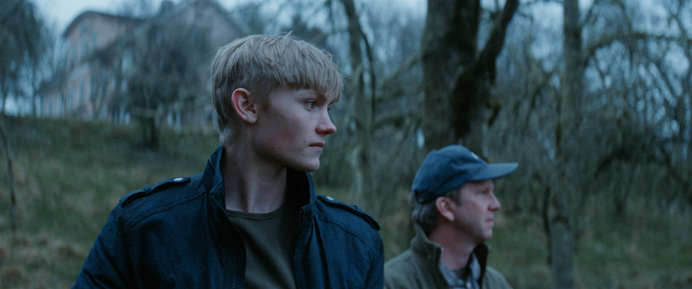
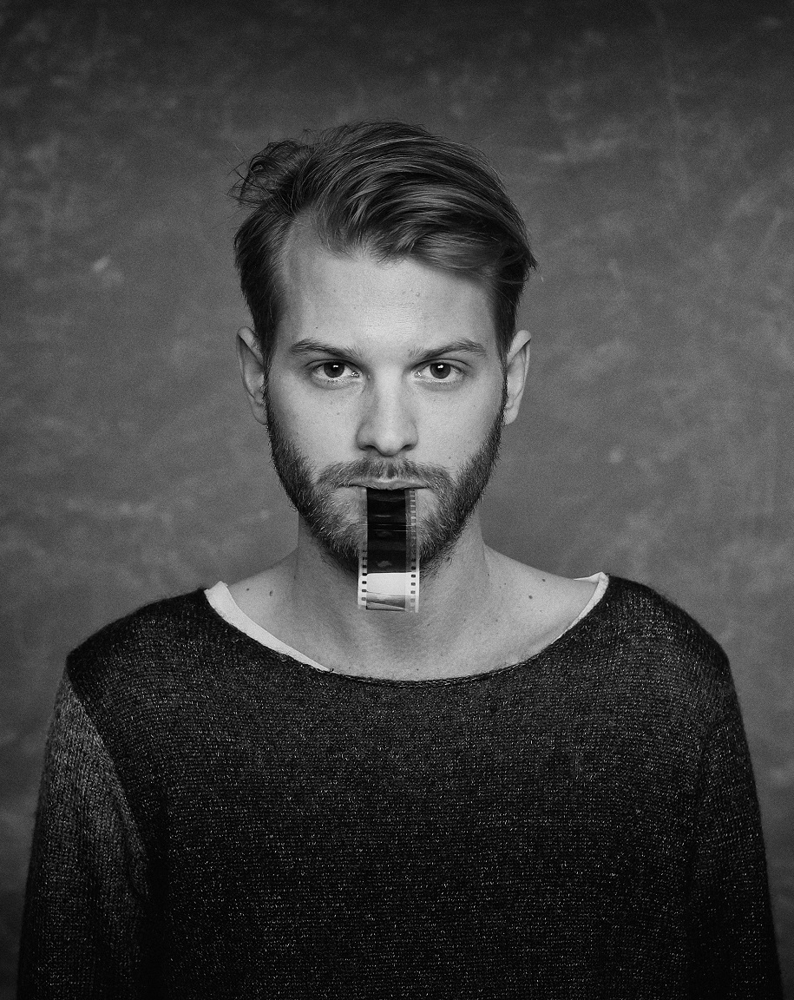

The Here After
Directed by Magnus von Horn | Swedish/Poland/France | 2015 | 102 min.



“A chewy blend of Swedish and Polish ingredients, The Here After was never likely to be a fun frolic on a sun-kissed Baltic beach.”-Stephen Dalton, The Hollywood Reporter
Premiere:
Tuesday, March 29
1:00 pm | McConomy Auditorium | CMU University Center
Event Includes:
+ Special appearance by Director Magnus von Horn via Skype
Presented in conjunction with:
+ Presented as a part of the CMU IFF Youth Program in Collaboration with CAPA
Synopsis
When John, a quiet adolescent, returns home to his father after serving time in prison, he is looking forward to starting his life afresh. However in the local community, his crime is neither forgotten nor forgiven. John’s presence brings out the worst in everyone around him and a lynch-mob atmosphere slowly takes shape. Everyone in this emotionally disconnected country town carries a shred of blame inside, but acknowledging that would mean the unthinkable- accepting partial responsibility. Feeling abandoned by his former friends and the people he loves, John loses hope and the same aggressions that previously sent him to prison start to resurface. Unable to leave the past behind, he decides to confront it in this quiet and cerebral debut feature from Magnus von Horn.
Awards
- Cannes Film Festival, 2015, Camera d'Or Nominee
- Chicago International Film Festival, 2015, Gold Hugo Award Nominee
- London Film Festival, 2015, Sutherland Award Nominee
- Polish Film Festival, 2015, Best Director, Editing, & Screenplay Awards
- Stockholm Film Festival, 2015, Best Film Nominee
- Guldbagge Swedish Film Awards, 2016, Best Film, Director, & Supporting Actor Awards
Director Magnus von Horn
Magnus von Horn was born in Göteborg, Sweden, studied at the esteemed Łódź Film School in Poland and currently lives in Warsaw. He has directed a few short films, which have won him several awards around the world. His documentary Radek has won the Maciej Szumowski Award at the Kraków Film Festival, while his school short film Echo earned the Silver Hobby Horse for the best live action short film, the best film award at the Munich International Short Film Festival and the Grand Prix at the Aix-en-Provence Tous Courts Short Film Festival. Echo was also officially selected for the 2010 Sundance Film Festival. His diploma short, Without Snow, premiered at the 2011 Locarno International Film Festival. He has also received the Grand Prix at the Bilbao International Festival of Documentary and Short Film and has been nominated for the Swedish Guldbagge Award for best short film. In Poland, he has received the Silver Hobby Horse at the Kraków Film Festival and the Grand Prix in the Young Cinema Competition at the Gdynia Film Festival. The Here After is his debut feature film.